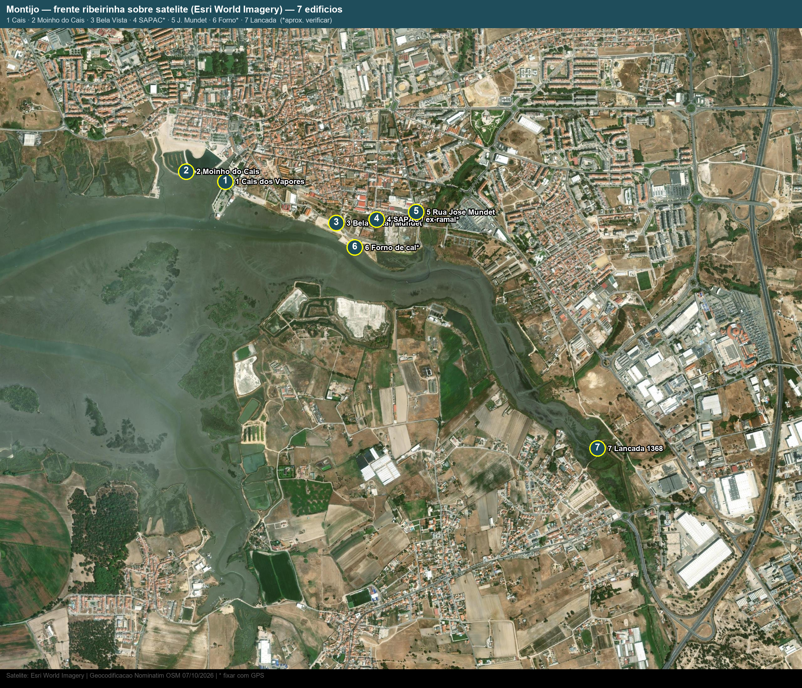

1 · Edifícios abandonados
| # | Edifício | Coord. | Estado |
|---|---|---|---|
| 1 | Mundet Bela Vista / Nascentes (1923–88) | 38.70080, -8.96927 | Naves completas por fora; coberturas/interiores a refazer |
| 2 | SAPAC / ex-ramal em banda | 38.70100, -8.96650 * | Boas para dividir em arrendatários; fixar GPS/donos |
| 3 | Rua José Mundet (parcelas) | 38.70139, -8.96380 | Ruína parcial; confirmar existência |
| 4 | Armazéns + forno de cal | 38.69950, -8.96800 * | Ruína arqueológica; consolidar |
| 5 | Fábrica completa a leste | zona nascente | Grande devoluta 2012; localizar e medir |
* aproximado — fixar no terreno.
2 · Mudaram de programa (referências)
| Antes → Depois | Datas | Lição |
|---|---|---|
| Moinho de Maré do Cais → museu (38.70356, -8.97955) | ref. 1646 · municipal 1995 · museu 2005 | Maré–caldeira–engenho como energia do sítio |
| Moinho de Vento do Esteval → museu funcional | 1826 · reaberto 2000 | Torre pedra + capelo a sarilho; porta SE contra vento |
| Cais dos Vapores → lazer/náutica/restauração (38.70302, -8.97687) | ponte-cais 1852 · edifício 1994 · protocolo 2025 (467+467+80 m²) | Âncora do projeto; articular programa com ele |
| Quinta das Nascentes → Casa da Música Jorge Peixinho | ação de regeneração CM | Cultura como âncora junto ao corredor verde |
3 · Gráfico satélite

Esri World Imagery · Nominatim OSM 07/10/2026 · * fixar com GPS · 2560 px pronto para Canva.
4 · Mapa interativo
5 · O que levantar em cada um
- Matriz: área, vão, pé-direito, estrutura, cobertura, humidade, acesso, dono.
- Riscos: amianto, solos, caves em cota de maré, estabilidade.
- Regra: recuperar e dividir antes de demolir.
Fontes: CM Montijo (ARU/ORU, património, PEZOR) · Diário do Distrito 12/06/2025 · O Setubalense 28/10/2022 · ULusófona 2014 · FA-UL 2012. Confirmar no terreno.